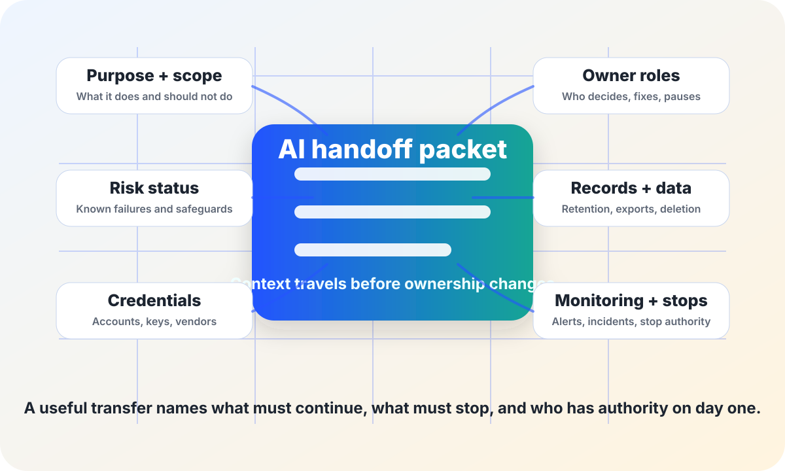

AI governance and continuity
AI handoff packet.
A practical packet for transferring AI ownership when a staff role, vendor, department, or project lead changes — without losing risk context, records, credentials, monitoring, or stop authority.
The short answer
An AI handoff packet is the minimum context a new owner needs before they inherit an AI workflow. It should name what the system is for, what it must not do, who can pause it, what records exist, which data and credentials need control, which risks are still open, and what monitoring or incident work is due next.
Handoffs matter because many AI failures are not single dramatic model mistakes. They are ordinary continuity failures: the person who knew the caveats leaves, a vendor setting changes, a monitoring dashboard goes unread, a public notice becomes stale, or no one knows who has authority to stop the tool.

Why handoff planning matters
NIST’s AI Risk Management Framework treats AI risk management as an ongoing lifecycle practice: organizations govern, map, measure, and manage risks over time, with documentation and accountability. OMB Memorandum M-24-10 directs U.S. federal agencies to maintain AI governance, risk management, testing, monitoring, and safeguards for rights- and safety-impacting AI uses. Those responsibilities do not disappear when a manager, vendor contact, or project lead changes.
CISA’s Secure by Design guidance emphasizes accountability across the technology lifecycle, and the U.S. National Archives and Records Administration explains that records must be managed according to approved schedules. The practical civic lesson is simple: ownership transfer is a risk event. Treat it like one.
When to create or refresh the packet
Role change
A system owner, approver, reviewer, data steward, security contact, or escalation lead leaves or changes jobs.
Vendor change
The vendor contact, contract, model version, hosting arrangement, data term, subprocessor list, or support path changes.
Department move
The workflow moves to another office, school, program, contractor, grant, or shared-service team.
Risk event
An incident, appeal, audit finding, public complaint, accessibility issue, or privacy concern reveals missing context.
Renewal or sunset
A pilot is expanding, a contract is renewing, or a system is being narrowed, paused, replaced, or archived.
Annual review
Even without a dramatic change, the packet should be checked on a regular schedule so it stays useful.
What the packet should include
| Packet section | What to capture | Why it matters |
|---|---|---|
| Purpose and scope | Plain-language purpose, approved uses, forbidden uses, populations affected, decision points, and current status. | Prevents silent expansion and helps the new owner notice scope drift. |
| Owner roles | Business owner, technical owner, data steward, security contact, legal or policy contact, human reviewer, public contact, and backup roles. | Makes responsibility real even when individual people move on. |
| Risk status | Known failure modes, unresolved incidents, appeals, bias or accessibility concerns, privacy/security issues, risk rating, and accepted exceptions. | Stops the new owner from inheriting a polished story while missing live risks. |
| Evidence and monitoring | Evaluations, local test results, monitoring metrics, alert thresholds, review cadence, open review dates, and dashboard owners. | Shows whether the system is actually being checked, not merely deployed. |
| Records and data | Records schedule references, data sources, prompts/uploads/outputs/logs, retention decisions, deletion requests, exports, and legal holds. | Keeps continuity from becoming accidental over-retention or accidental deletion. |
| Credentials and vendors | Account inventory, API keys, OAuth grants, service accounts, integrations, vendor portal roles, contracts, renewal dates, support contacts, and incident notice terms. | Reduces dormant access, broken automation, and vendor obligations that no one owns. |
| Public and staff communication | Public notices, consent or disclosure language, staff scripts, training materials, help-desk answers, and appeal/correction instructions. | Keeps people from relying on stale instructions after ownership changes. |
| Stop authority | Who can pause, narrow, rollback, or shut down the system; what triggers escalation; and how affected people keep receiving service. | Prevents “everyone assumed someone else could stop it.” |
Run a 45-minute transfer meeting
- First 5 minutes: state the workflow purpose, current status, affected people, and what must not change without approval.
- Next 10 minutes: walk through open risks, incidents, appeals, accessibility concerns, privacy/security issues, and accepted exceptions.
- Next 10 minutes: confirm records, data locations, retention rules, deletion requests, exports, legal holds, and vendor-held data obligations.
- Next 10 minutes: confirm accounts, keys, service accounts, vendor roles, monitoring dashboards, alerts, and backup contacts.
- Final 10 minutes: name the new owner, backup owner, next review date, stop authority, and unresolved questions with deadlines.
Copy-paste starter packet
Use role names rather than personal email addresses in public or broadly shared versions. Store private credential details in the approved secrets system, not in this packet.
Stop rules for unsafe handoffs
- Do not transfer ownership if no one can identify who has authority to pause a rights-, safety-, health-, benefits-, or service-impacting AI workflow.
- Do not paste API keys, passwords, tokens, private logs, personal data, or vendor secrets into a handoff document.
- Pause expansion when the new owner cannot access evaluation evidence, monitoring results, incident history, or appeal/correction records.
- Pause vendor renewal if the handoff reveals unresolved data return, deletion, audit access, subprocessor, or incident notice questions.
- Do keep a redacted, shareable version for governance and a restricted operational inventory for credentials and sensitive details.
Related field-guide pages
Sources
- NIST — AI Risk Management Framework.
- Office of Management and Budget — Memorandum M-24-10, Advancing Governance, Innovation, and Risk Management for Agency Use of Artificial Intelligence.
- CISA — Secure by Design.
- U.S. National Archives and Records Administration — Records scheduling.
- Federal Trade Commission — Data Breach Response: A Guide for Business (used here for practical incident and data-handling caution, not as legal advice).
This guide is public education, not legal advice. Local records, procurement, labor, privacy, cybersecurity, accessibility, and public-records rules may impose additional handoff requirements.